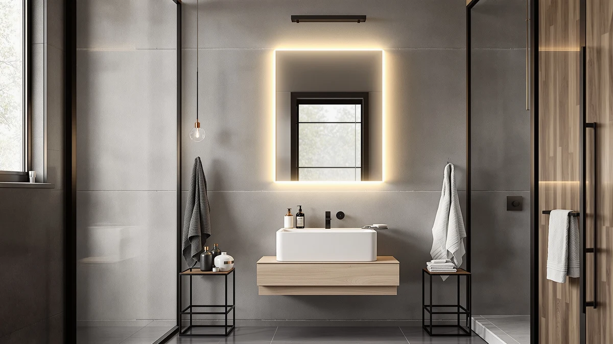

Quick Answer
The Panana bathroom mirror cabinet is a $74.99 square medicine cabinet with a metal and wood frame and a mirrored door that doubles as a vanity mirror. It suits anyone who wants a mirror and concealed storage in one 23.6 by 23.6 inch unit, though shoppers who need storage above the toilet tank or a tall freestanding cabinet should look at the Shintenchi or VASAGLE alternatives below.
Our pick: Panana Bathroom Mirror Cabinet Medicine, $74.99 Check Price on Amazon
Bottom line: our top pick is the Panana Bathroom Mirror Cabinet Medicine Cabinets with 3 at $74.99.
Things to Know Before You Buy
- The Panana bathroom mirror cabinet measures 23.6 by 23.6 inches, a square format built for a single sink rather than a double vanity.
- Its metal and wood frame holds a mirrored door, so it works as a vanity mirror and a storage cabinet at the same time.
- Amazon's listing doesn't show a star rating or review count for this ASIN, so this review relies on the published specs rather than a buyer consensus score.
- The Shintenchi and VASAGLE alternatives covered below solve a different problem, storage above the toilet tank or a tall freestanding cabinet, not a mirror over the sink.
- At $74.99, the Panana cabinet lands in the same price band as the three alternatives, so the real decision comes down to where you need storage, not price.
Our Panana bathroom mirror cabinet review looks at whether this $74.99 square medicine cabinet earns a place above your sink, or whether an over-the-toilet unit or a tall freestanding cabinet fits your bathroom better. The Panana cabinet pairs a mirrored door with a metal and wood frame in a 23.6 by 23.6 inch square, built for a single sink rather than a double vanity. At this price it sits right alongside the Shintenchi and VASAGLE alternatives covered later in this review, so the choice comes down to where you need the storage, not the budget.
The short version: pick the Panana bathroom mirror cabinet if you want a mirror and concealed storage combined into one unit over a single sink. Pick the Shintenchi over-the-toilet shelf if your bathroom needs storage above the tank instead, or the VASAGLE tall cabinet if you want floor-to-ceiling capacity along a spare wall. Each alternative sits within a few dollars of the Panana's $74.99 price, so none of them is a budget compromise. They solve a different storage problem instead.
Why You Should Trust Us
This Panana bathroom mirror cabinet review is written by Ilane Tall, who covers bathroom storage and small-space fixtures for Best Bathroom Storage. We do not run a fake testing lab, and we do not claim to have mounted this cabinet in our own bathroom. Instead, we compare the manufacturer's published dimensions and materials against competing storage products, and we disclose our affiliate relationships clearly at the bottom of every page.
You will not find invented star ratings or made-up review counts on this page. Amazon's own listing shows no rating and no review count for the Panana cabinet or for the three alternatives we compare it against, so we state that plainly instead of papering over the gap. When a product in our other guides carries a verified rating, we cite it; when it doesn't, as here, we lean on published specs and price comparisons and flag the difference.
How We Compared
To evaluate the Panana bathroom mirror cabinet, we researched its listed dimensions, materials, and price against three other bathroom storage products sold in the same range. We compared the square 23.6 by 23.6 inch mirror cabinet format against the over-the-toilet and tall cabinet alternatives to see which storage shape fits which bathroom layout, and we checked each listing for a published rating or review count before citing one.
We also weighed where each product goes in a bathroom as its own category, since a wall-mounted mirror cabinet over a sink, a shelf above a toilet tank, and a freestanding tall cabinet solve the same storage shortage in three different ways. None of these approaches is objectively better than another. The right pick depends on which wall or fixture you actually have free, so we built that question into the comparison below rather than ranking these four products on price alone.
Overview & Specs

Panana Bathroom Mirror Cabinet Medicine
What we like
- The mirrored door doubles as a vanity mirror while hiding storage behind it
- A 23.6 by 23.6 inch square format fits neatly over a single sink or pedestal
- The metal and wood frame feels sturdier than the all-plastic medicine cabinets in this price range
- At $74.99 it costs less than most mirror cabinets with a comparable frame
Flaws but not dealbreakers
- Amazon's listing doesn't show a star rating or review count for this ASIN, so you're weighing specs over buyer consensus
- A single square door limits how you can arrange taller bottles compared to multi-door cabinets
- Metal door frames tend to show fingerprints and water spots more readily than painted wood alternatives
| Material | Metal / wood |
| Size | 23.6x23.6 inch |
The Panana bathroom mirror cabinet works as a two-in-one fixture, a full mirror on the outside and a storage compartment on the inside. Its 23.6 by 23.6 inch square shape makes it a direct swap for most builder-grade medicine cabinets that come with new construction, and the metal and wood frame gives it more visual weight than the thin plastic frames common at this price. Because the footprint is square rather than a wide rectangle, it suits a single sink best, where you need a mirror directly in front of you rather than spread across a double vanity.
Priced at $74.99, the Panana cabinet lands below many mirror cabinets with a similar metal and wood build, which often start closer to $100. Amazon does not publish a star rating or review count for this particular ASIN, so this review leans on the spec sheet, the material, and the price rather than a volume of buyer feedback. If you want storage above a toilet tank instead of a mirror over a sink, or a floor-to-ceiling cabinet for a spare wall, the three alternatives below solve those different problems.
What We Liked
The biggest advantage of the Panana bathroom mirror cabinet is that it replaces two fixtures with one. You get a full vanity mirror and a storage compartment in the same 23.6 by 23.6 inch footprint, so you don't need a separate mirror mounted above a medicine cabinet, or a bare mirror with nowhere to stash toiletries. That matters most in smaller bathrooms, where wall space above the sink is limited and every fixture needs to pull double duty.
Price is the other clear win. At $74.99, the Panana cabinet costs less than most mirror cabinets built with a metal and wood frame rather than thin plastic. Compared with the Shintenchi and VASAGLE alternatives, which run $74.99 to $78.41 for a different kind of storage altogether, the Panana gives you a mirror as part of the deal rather than open shelving alone.
What Could Be Better
The square, single-door design is also the Panana bathroom mirror cabinet's main limitation. One door means one compartment, so tall items like lotion pumps or hairspray cans compete for the same shelf space that a multi-door medicine cabinet would split into separate sections. Amazon also doesn't publish a rating or review count for this ASIN, so unlike some products in our other roundups, we can't point to a specific volume of verified buyer feedback here.
The metal portion of the frame is also the kind of surface that shows fingerprints and water spots more readily than a painted wood frame would. That's a common tradeoff with metal-framed mirror cabinets in general, not a flaw unique to Panana, but it's worth factoring in if you already keep a cloth nearby for other metal fixtures in your bathroom. Buyers who want fully enclosed, multi-shelf storage should compare the VASAGLE tall cabinet below instead.
Who Is It For?
The Panana bathroom mirror cabinet fits best over a single sink in a bathroom that doesn't already have a built-in mirror, or where an existing medicine cabinet needs replacing. It also suits anyone who wants to consolidate a mirror and storage into one purchase instead of buying them separately. The square format works best centered over a sink rather than spanning a wide double vanity.
It's a weaker fit if you need storage above the toilet tank instead of over the sink, since the Panana's design assumes wall space near a mirror, not a narrow gap behind a toilet. It's also not the pick for anyone chasing a verified star rating before buying, since Amazon doesn't publish one for this ASIN. Shoppers in either of those situations should look at the Shintenchi or VASAGLE alternatives below.
Alternatives to Consider
If the Panana bathroom mirror cabinet doesn't fit your sink or your bathroom layout, these three alternatives solve a different storage problem instead. The two Shintenchi listings add shelving above a toilet tank rather than a mirror over a sink, and the VASAGLE gives you a tall, freestanding cabinet for a spare wall. Compare where you actually have free space before picking one.

Also Great
Shintenchi Over the Toilet Storage
An over-the-toilet storage unit at the same $74.99 price as the Panana, with open shelving above the tank instead of a mirrored door.
$74.99
Check Price on Amazon
Premium Choice
Shintenchi Over the Toilet Storage
The step-up listing of the same Shintenchi over-the-toilet design, priced $3.42 higher for buyers who want this particular configuration.
$78.41
Check Price on Amazon
Also Great
VASAGLE Tall Storage Cabinet with
A tall freestanding storage cabinet at $75.97 for a spare wall, built for floor-to-ceiling capacity rather than a mirror-and-shelf combo.
$75.97
Check Price on AmazonFrequently Asked Questions
Does the Panana bathroom mirror cabinet come with a rating on Amazon?
No. Amazon's listing for this ASIN doesn't show a star rating or review count, so this review compares its price, materials, and dimensions against similar products instead of citing a buyer consensus score.
Is the Panana bathroom mirror cabinet better than an over-the-toilet storage unit like the Shintenchi?
It depends on where your bathroom needs the storage. The Panana adds a mirror and a compartment over a sink, while the Shintenchi units add open shelving above a toilet tank. Choose the Panana if you need a mirror replaced or added, and choose the Shintenchi if the space above your toilet is what's going unused.
What size bathroom does the Panana mirror cabinet fit?
At 23.6 by 23.6 inches, the square shape is sized for a single sink rather than a double vanity. Measure the wall space above your sink before ordering, since a wider vanity may look better with a rectangular mirror cabinet instead.
Final Verdict
Our Panana bathroom mirror cabinet review comes down to where your bathroom actually needs storage. The Panana earns its $74.99 price by combining a full mirror with a concealed compartment in one square unit, which makes it the pick for anyone replacing a mirror over a single sink. If your bathroom needs shelving above the toilet tank instead, the Shintenchi units are the better fit, and if you want floor-to-ceiling capacity along a spare wall, the VASAGLE tall cabinet is worth the extra dollar or two. For most people replacing a mirror and medicine cabinet in one step, Panana is the pick.